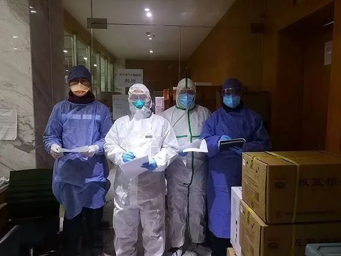

新增病例严重超速，“堰塞湖即将泄洪”，武汉疫情正面临这三大挑战
原文链接 备份链接 06.02.2020本文字数：4302，阅读时长大约7.5分钟 导读：一周时间，武汉新增病例5.5倍增长，累计病例增长3.69倍。 作者 | 第一财经 马晓华 胥会云 武汉封城之后，湖北以外的各省份对新型肺炎展开了“ …

图片来源：同济大学附属东方医院
记者：刘素楠 编辑：徐菲
“
大多数病人都比较稳定，多数患者只需药物治疗甚至可以不服药物。
”
2月9日下午2点至次日凌晨，武汉客厅方舱医院B区来了百余位患者。他们一批批从大巴上下来，进入舱内，医护人员的工作量瞬间剧增，一位医生要独自完成平日里住院医师和主治医师两个人的工作。
在B区值班的医生华晶来自上海，他是同济大学附属东方医院呼吸内科医生、中国国际应急医疗队（上海）队员。2月4日，这支55人的医疗队从上海出发，增援武汉。2月7日晚，救援队正式进驻武汉客厅方舱医院，开始收治患者。

图片来源：同济大学附属东方医院
华晶的工作是完成患者病情的评估、病历的书写、医嘱的开具以及所有病人的安抚和特殊病情的处理。9日当晚一个班下来，他收治了30多名患者，加上前一个班次，前后共收治了60多位新患者，同时他还要处理管辖区域内200余位患者的突发状况。
2月4日，武汉开始征用11家场馆改造成“方舱医院”，上海医疗队所在的武汉客厅方舱医院将床位隔断为ABCD四个区，“跟A区相比，B区的防护设施更齐全了，以前我们A区还自己准备长筒鞋套，在B区武汉已备好了，我们的防护设备还是够的。”华晶介绍道。
新冠肺炎患者分成四个类型：轻症、普通、重症、危重，方舱医院原则上只收前两种患者。目前，武汉客厅方舱医院的ABC三区可收治患者1500余人，每个区每班安排6-8名医生、16名护士在岗。

华晶医生绘制方舱医院图。图片来源：同济大学附属东方医院
9日是华晶医生第二次入舱。2月8日他首次入舱，收治了约25位患者，这次收治了约35名。
一晚的工作结束后，他感触颇深，“跟A区相比，B区进来的病人数量大且速度快，‘嗡——’地涌入B区后，患者四处走动，护士长用高音喇叭劝导，请患者坐在床边等待问诊，但效果并不明显。”同时，他也坦言，因部分新上岗的医护人员还在熟悉环境，加上B区内两名医生共用一台电脑，现场工作仍显杂乱。
“如何更有效地管理这种大客厅式病区？”华晶说，他想建议武汉防疫指挥部，不仅要加强医护对流程和系统的熟悉，还要发动群众，让患者学会自我管理，而自我管理要做的第一件事就是不要乱走动。
不让患者乱走，有几层原因。
一是方舱里有数百上千人，留给患者走动的空间很小。如果患者到处走动，医生护士由于穿上了隔离服视野只有90度（平时是108度），难免碰撞患者，有可能造成服装破损，风险很大。
再者，乱走动也耽误问诊，医生问诊的时候患者不在床位上，或者问完后却发现患者并没有在护士处登记，就容易造成漏诊、重复诊断。
此外，方舱的整个区域被分为污染区、缓冲区、清洁区，患者和医护各有不同的出入口。患者要避免进入清洁区，否则有可能引发清洁区中的医护人员感染，导致非战斗性减员。

准备收治病人的方舱医院。图片来源：同济大学附属东方医院
华晶医生注意到，B病区里每一个小隔间共有12名病人，其中往往有两三名年轻的白领患者，他们大多个人素养不错，且有管理经验，“把他们选成寝室长，这样医护抓头羊，管理就方便多了。”
同华晶医生并肩作战的，是同济大学附属东方医院呼吸内科医生、中国国际应急医疗队（上海）队员赵黎明。2月9日也是他第二次进舱，从下午2点开始，一直工作到晚上9点半。“穿上这套防护服，手脚就是笨笨的。”他说。
他说，这是中国当代史上第一次建立的“通铺式”医院。每位患者分发了一件保暖军大衣，食物是免费的，按需索取。截至2月10日，方舱医院已收治1213名患者，数字还在快速增长。
自从进入方舱，赵黎明已接诊了42名患者，轻症占30%，普通型占70%。所谓“普通型”，是指那些CT有病变，临床症状轻微的患者。
“武汉人民真不容易！”赵黎明感慨。
在他接诊的患者中，有一位24岁的小伙子。他外婆感染新冠肺炎后已经离世，母亲感染后在另外一家医院住院，他和父亲进入了方舱医院。“我刚接触时，小伙子情绪低落，我一边去安慰一边打听他妈妈的情况，晚上小伙子听说妈妈情况好转后，情绪开始好起来了。”赵黎明说。

图片来源：同济大学附属东方医院
护士没有输液的工作，一般不需要照顾患者生活，故而护理操作少一些，但维持秩序的工作在初期较重。2月10日，按照应收尽收的原则，方舱医院收治了不少65岁以上的患者，之后生活护理的工作将变重。
赵黎明发现，入住的患者以普通型肺炎居多，交叉感染、聚集性发病居多，病程比较长，一般超过两周。因此，他建议加大调配医护人员和医疗设备的力度，“只有应收尽收，才有可能遏制武汉疫情蔓延的势头”。
同济大学附属东方医院药学部药剂师、中国国际应急医疗队（上海）队员黄国鑫在到达武汉后，就进入方舱医院内的药房开始忙碌。
“武汉人民太苦了！希望他们早点好起来！”从2月9日晚8点到2月10日早8点，一个大夜班，黄国鑫在药房就入了超过1500袋汤剂，每袋200毫升，“中药用来抗病毒，是汤剂，当天熬制当天分发到方舱里。”
药剂师的工作除了满足方舱内患者的需求，还要负责医护人员的日常用药，“我们是12小时一班，做一休一，但休一时也会工作。人手紧，任何时间队员有不舒服，我们随叫随到。”黄国鑫说。

图片来源：同济大学附属东方医院
药师团队由十人组成，人员来自各省市国家紧急医学救援队，由陕西队药师廉江平担任组长。由于药品都是从不同地方紧急调拨的，寻找起来困难，也无规律性。此前，黄国鑫和药师团队一起整理药房，安装冰箱组件，手工绘制药品分布图。
由于长时间戴口罩，黄国鑫的腮帮、鼻梁上留下了一条宽宽长长的勒痕。他说，救援队就是战时的样子，“快速集结、快速进入战斗状态，快速获得战场的主动权、控制权，我们上海东方医院国家紧急医学救援队长期以来就是这样训练的，所以药品分类归档的技能也能迅速派上用场。”
随着方舱医院的投入使用，总还有好消息传来。据华晶医生介绍，截至2月10日，大多数病人都比较稳定，多数患者只需药物治疗甚至可以不服药物。

药师团队。图片来源：同济大学附属东方医院
“不服药的患者，是早期服用过，或服药快结束了。还有就是局部感染了，且在转好。”他预计舱内很快就有病人可以出院，但需要符合两次复查核酸阴性以及影像学检查好转的条件。
华晶值班时遇到过一位年纪稍长的女性患者。看到病历之后，他问诊提的所有问题都和患者的症状相符，他甚至知道患者家中养鸟。这让患者本人对眼前的上海医生佩服不已，本来女儿联系好汉口医院的床位，她却不打算再转走。“遇到神医了！”她对隔壁病友说。
在收治患者的过程中，华晶发现“有个别患者进来之后又想出去的。我问他，他说他害怕。”但他也欣慰地看到一些入舱患者很乐观，“发病早的、时间长的患者会给刚刚发病的新人讲述自己的故事、体会，听得病友一会儿开心大笑、一会儿紧蹙眉头。看着高声说话的老病友，新来的患者也会对我们说，‘看他，生了那么久的病，现在还是活蹦乱跳的，个把马的老子凭么事吓不过（武汉话：凭什么害怕）！’”
“这场战役的成功，除了必不可少的医护人员，患者更是核心力量。如果每位患者都能够做到对自己负责、对集体负责、对医护负责，那这场众志成城的战役，一定能够打赢。”他说。
未经授权 禁止转载

原文链接 备份链接 06.02.2020本文字数：4302，阅读时长大约7.5分钟 导读：一周时间，武汉新增病例5.5倍增长，累计病例增长3.69倍。 作者 | 第一财经 马晓华 胥会云 武汉封城之后，湖北以外的各省份对新型肺炎展开了“ …
原文链接 备份链接 伴随着火神山、雷神山医院开始收治病人，15家方舱医院陆续启动， 各省医疗队开赴武汉，武汉所有确诊患者与疑似病例都将“应收尽收”。 在人类抗击疫病的历史上，“武汉会战”已成为一场史无前例的超级行动 图/新华、中新 武汉 …
原文链接 备份链接 实习生 于洋 澎湃新闻记者 赵思维 2月5日晚，湖北武汉洪山体育馆改造的武昌方舱医院开始接收首批新冠肺炎轻症患者。至11日8时，武昌方舱医院先后投入120名医生、400名护士的医护力量，目前仍有437位轻症患者在接受治 …
原文链接 备份链接 司机停下车来思忖着说，怎么给导到这里来了？ 那是一条土路，树在旁边矗立着。春天还没到来，它的叶子还没长出来。 “前方800米左转，500米后再左转”，导航里的声音软糯着。 金银潭医院是此次行程的目的地。这是武汉市最大的 …
原文链接 备份链接 2 月 9 日下午，在被方舱医院「退回」4 天后，刘俊一家被街道居委会通知，当日会安排车辆送其父母入院治疗。 在此之前，经历了数日的网络求助，刘俊一度感到入院无望，特别是在父亲退烧后，几乎接受了无法入院治疗的事实。对于 …